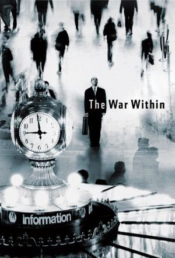
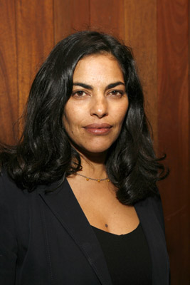
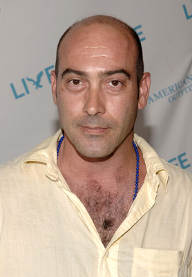
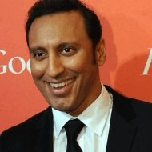
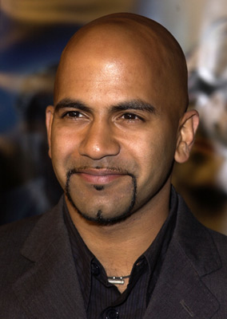
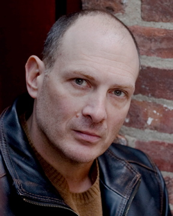
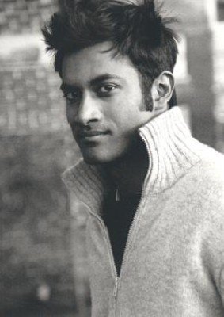

#3404 The War within - Vom Opfer zum Attentäter
Alternativ: The War Within
 
 IMDB-Wertung: 6.9 / 10
IMDB-Wertung: 6.9 / 10  Metascore: 61
Metascore: 61 
Sayeed Choudhury was born Pakistan but has immigrated to the U.S.A., where he now lives in New York with his wife, Farida; a school-going daughter, Rasheeda; a school-going son, Ali; and unmarried sister, Duri. One morning Farida hears a knock on the door, Ali opens it and there is Sayeed's childhood friend, Hassan, who is welcomed with open arms by the family. Hassan informs them that he is going to be hired soon in the States and he is invited to spend a few days with the Choudhury family. Duri, who has a Caucasian boyfriend, Mike, is also thrilled to meet Hassan and openly shows her attraction to him. Ali also takes an instant liking to Hassan, and is taught the true values of Islam, and when one Muslim hurts, then the pain is felt by Muslims worldwide. Sayeed is quite content with the American way of life and feels secure and comfortable especially when he sees Germans, Jews, Muslims, Catholics, and non-believers living in harmony and doing business with each other. Sayeed will ...
Jahr: 2005
Dauer: 90 Minuten
FSK:
Land: USA Studio: Magnolia PicturesTonspuren: DD5.1 - ,
Untertitel:
Auflösung: 1080p (1920x1080) Größe: 7014 MB
Genre: Drama
Regisseur: Joseph Castelo
Drehbuch: Ayad Akhtar, Joseph Castelo, Tom Glynn
Soundtrack: David Holmes
Darsteller:
- Ayad Akhtar als Hassan
- Firdous Bamji als Sayeed Choudhury
- Nandana Sen als Duri Choudhury
-  Sarita Choudhury als Farida S. Choudhury
- Charles Daniel Sandoval als Khalid
-  John Ventimiglia als Gabe
- Michael McGlone als Mike O'Reilly
-  Aasif Mandvi als Abdul
-  Ajay Naidu als Naved
- Kamal Marayati als Imam
- James Rana als Saudi Man
-  David Bishins als Tall Agent
- Angel Desai als Reporter
-  Samrat Chakrabarti als Pakistani Interrogator
- Roy Farfel als CIA Agent No. 1
- Deepti Gupta als Woman No. 1
- Farah Bala als Woman No. 2
- Goli Samii als Female Passenger
- Troy Hall als Male Passenger No. 1
- David Connolly als Guy in the back of the cab
- Joseph M. Abbott als Police Officer
- Sam Ghosh als Hassan's Brother , scenes deleted
- Varun Sriram als Ali S. Choudhury
- Anjeli Chapman als Rasheeda S. Choudhury
- Wayman Ezell als Izzy
- Christopher Castelo als Steven
- Christine Commesso als News Anchorwoman
- John Zibell als Officer Carroll
- Joseph Ascolese als Cop No. 1
- Douglas Paretti als Cop No. 2
- Michael Balsley als Agent No. 1
- Rob Carroll als Agent No. 2
- Per Melita als Terrorist
 Jeff Ward als CIA Agent No. 2
Jeff Ward als CIA Agent No. 2- Glenn Pike als CIA Agent No. 3
- Vanessa A. Londino als Receptionist
- Deepa Purohit als Woman No. 3
- Dianne Busch als Ticket Clerk
- Dimitra Bixby als girl in Mosque
Datei: X:\2005(N-Z)\War within - Vom Opfer zum Attentäter, The (2005, FSK, 1920x1080).mkv seit 01.04.2016
Festplatte: HD 2005(G-Z)-2006(A-Z)
 Es gibt insgesamt 50 Filme in der Gruppe '2005(N-Z)'
Es gibt insgesamt 50 Filme in der Gruppe '2005(N-Z)'